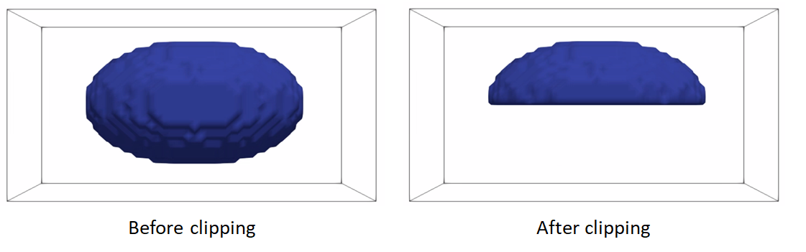
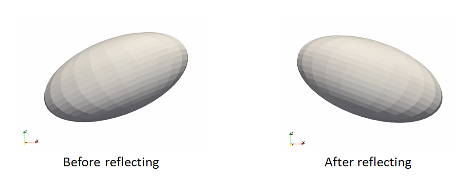
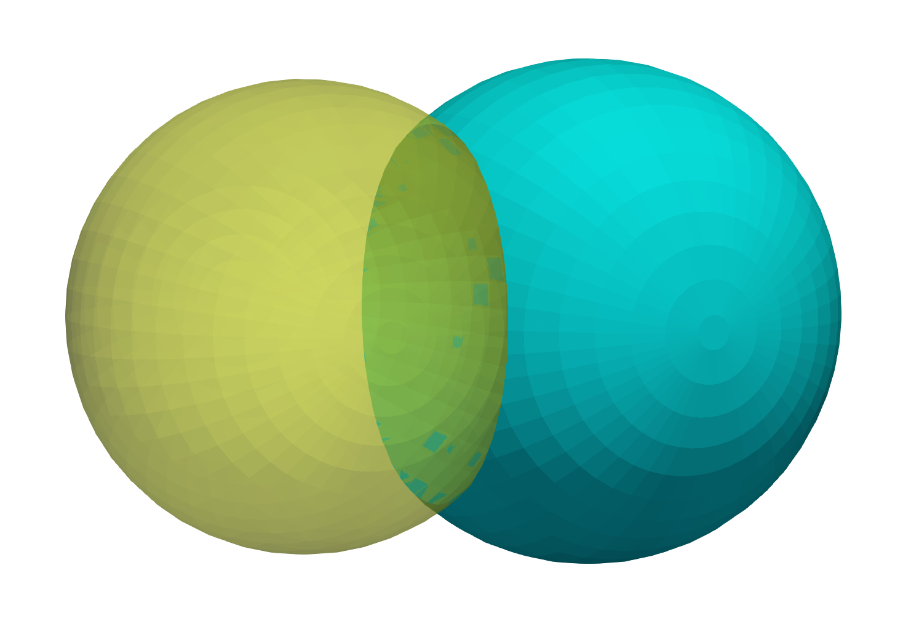

How to Groom Your Dataset?
ShapeWorks needs suitable distance transforms or meshes for establishing shape correspondence. The groom stage has the pipeline to generate aligned distance transforms from binary segmentations or groomed meshes from unaligned meshes. Common grooming steps are outlined below. For descriptions of the ShapeWorks commands used, see: ShapeWorks Commands.
Common Pre-Processing Steps for Segmentations
Resampling images and segmentations
This grooming step resamples all the binary volumes, which in a raw setting could be in different physical spaces (different dimensions and voxel spacing). This grooming step brings all segmentations to the same voxel spacing, typically isotropic spacing (e.g., 1,1,1).
A smaller voxel spacing than the original spacing improves the resolution of the segmentations and reduces the aliasing (i.e., staircase) artifact resulting from the thresholding/binarization process.
Resampling both images and segmentations
If your dataset contains both images (e.g., CTs, MRIs) and binary segmentations, it is recommended that resampling is performed on both to keep them aligned for subsequent analyses that might entail/need imaging data.
Since image resampling entails interpolation, directly resampling binary segmentations will not result in a binary segmentation, but rather an interpolated version that does not have two distinct labels (i.e., foreground and background).
To mitigate this behavior, we need first to convert the binary segmentations (with zero-one voxels) to a continuous-valued (gray-scale) image. This can be done by either antialiasing the segmentations, which smooths the foreground-background interface, or converting a segmentation to a signed distance transform, where each voxel encodes the physical distance to the closest surface point (zero-one interface) with the sign indicating whether the voxel is inside or outside the foreground region.
Here is a resampling pipeline example for binary segmentation that uses antialiasing:
antialiasthe binary segmentation to convert it to a smooth continuous-valued imageresamplethe antialiased image using the same (and possible smaller) voxel spacing for all dimensionsbinarize(aka thresholding) the resampled image to results in a binary segmentation with the desired voxel spacing
Here is an example of resampling an ellipsoid with spacing (1,1,2) to have spacing (1,1,1):
antialias_iterations = 30
shape_seg = sw.Image(in_shape_filename)
shape_seg.antialias(antialias_iterations)
shape_seg.resample([1,1,1], sw.InterpolationType.Linear)
shape_seg.binarize().write(out_shape_filename)

Resampling images
Images are already given as a continued-valued grid of pixels. Hence, images can be directly resampled without any pre- or post-processing steps.
Resampling images reduces pixelation and smooths out intensity noise.

Resampling segmentations smooths out shape boundaries and reduces binarization aliasing.

Aligning segmentations
Rigidly aligning a cohort of shapes entails removing differences across these shapes pertaining to global transformations, i.e., translation and rotation. This step requires a reference coordinate frame to align all shapes to, where one of the shapes can be selected as a reference.
Rigid alignment (aka registration) is an optimization process that might get stuck in a bad local minima if shapes are significantly out of alignment. To bring shapes closer, we can remove translation differences using center-of-mass alignment. This factors out translations to reduce the risk of misalignment and allow for a medoid sample to be automatically selected as the reference for subsequent rigid alignment.
Applying transformation to segmentations
Applying a transformation to segmentations entails interpolation due to image resampling in the new coordinate frame. Similar to the resampling workflow, we will first antialias the segmentation to convert it to a continuous-valued image with a smooth foreground-background interface, then apply the transformation, and finally binarize the tranformed image.
Hence, the shapes alignment pipeline includes the following steps:
- Center-of-mass alignment for segmentations:
antialiasthe binary segmentation to convert it to a smooth continuous-valued imagetranslatethe binary segmentation so that the center of the image doamin is the center of mass of the shape.binarize(aka thresholding) to get a binary segmentation
-
recentermoves the center of the image (which is now the center of mass) to (0,0,0) -
Reference shape selection: One option for a reference is to select the shape that is closest to all other samples in the given cohort, i.e., the medoid shape. If shape instances are misaligned (i.e., do not share the same coordinate frame), translational and rotational differences should be factored out before reference selection.
- Use the pymodule function
find_reference_image_indexthat perform pairwise rigid registration using the iterative closest point method and selects the sample that is closest to all other samples after factoring out global transformation differences.
- Use the pymodule function
-
Rigid alignment:
antialiasthe binary segmentation and reference to convert them to a smooth continuous-valued imagecreateTransform: compute the rigid transformation parameters that would align a segmentation to the reference shapeapplyTransform: apply the rigid transformation to the segmentation and make it have the same cooridnate system as the referencebinarize(aka thresholding) to get a binary segmentation
Here is an example of performing center of mass alignment on one ellipsoid:
shape_seg = sw.Image(in_shape_filename)
antialias_iterations = 30
translation_vector = shape_seg.center() - shape_seg.centerOfMass()
shape_seg.antialias(antialias_iterations)
.translate(translation_vector)
.binarize().recenter()
.write(out_shape_filename)

Finding the reference:
ref_index = sw.find_reference_image_index(shape_seg_list)
ref_seg = shape_seg_list[ref_index].write('reference.nrrd')

Rigid alignment:
antialias_iterations = 30
ref_seg = sw.Image(ref_shape_filename)
shape_seg = sw.Image(in_shape_filename)
ref_seg.antialias(antialias_iterations)
shape_seg.antialias(antialias_iterations)
iso_value = 1e-20
icp_iterations = 200
rigidTransform = shape_seg.createTransform(ref_seg, sw.TransformType.IterativeClosestPoint, iso_value, icp_iterations)
shape_seg.applyTransform(rigidTransform,
ref_seg.origin(), ref_seg.dims(),
ref_seg.spacing(), ref_seg.coordsys(),
sw.InterpolationType.Linear)
shape_seg.binarize().write(out_shape_filename)

Clip segmentations
In some cases, binary segmentations need to be clipped with a cutting plane so that only the desired part of the shape is reflected in the shape model. To perform this step, you can use clip defined the cutting plane defined using three points.
Example of clipping:
shape_seg = sw.Image(in_shape_filename)
cutting_plane_point_1 = [10, 10, 0]
cutting_plane_point_2 = [-10, -10, 0]
cutting_plane_point_3 = [10, -10, 0]
shape_seg.clip(cutting_plane_point_1,
cutting_plane_point_2,
cutting_plane_point_3,))
).write(out_shape_filename)

Cropping and padding segmentations
In many cases, image boundaries are not tight around shapes. This leaves too much irrelevant background voxels that might increase the memory footprint when optimizing the shape model. We can remove this irrelevant background while keeping our segmentations intact and avoid cropped segmentations to touch image boundaries, which results in artifical holes in the shape boundary and does not allow particles to be distributed in regions touching the image boundary.
This cropping and padding step entails the following steps:
ImageUtils.boundingBox: computes the smallest bounding box (ShapeWorks region) that fits all segmentations in the given shape cohort. Note that this step should be applied to at segmentations that share the same coordinate frame (i.e., aligned)cropthe segmentation using the computed bounding boxpadthe cropped segmentation to ensure the shape is not touching the image boundary
Example of cropping and padding:
iso_value = 0.5 # a threshold value between 0 and 1 for binary segmentations
padding_size = 10 # number of voxels to pad for each dimension
padding_value = 0 # the constant value used to pad the segmentations
segs_bounding_box = sw.ImageUtils.boundingBox(shape_seg_list, iso_value)
shape_seg = sw.Image(in_shape_filename)
shape_seg.crop(segs_bounding_box)
.pad(padding_size, padding_value)
.write(out_shape_filename)

Converting segmentations to smooth signed distance transforms
For numerical computations for correspondences optimization, we need to convert binary segmentations to a continuous-valued image that satisfies the following requirements.
- smooth for gradient updates stability
- reflect the shape's surface (i.e., foreground-background) interface
- provide a signal for the particle to snap (move back) to the surface in case particles gets off the surface during optimization, which is a typical scenario when using gradient descent based optimization
An antialiased segmentation satisfies the first two requirements. However, if a particles leaves the surface (i.e., the zero-level set) during model optimization, which is typical in gradient descent based optimization, it would be challenging to snap it back to the surface.
A representation that satisfies all the requirements is the signed distance transform.
- A signed distance transform assigns to each voxel the physical distance to the closest point on the surface (i.e., the minimum distance from that voxel to nearest voxel on the foreground-background interface).
- The sign is used to indicate whether that voxel is inside or outside the foreground object.
- The zero-level set (zero-distance to the surface) indicates the foreground-background interface (i.e., the shape's surface).
- The gradient of a signed distance transform at a voxels indicates what direction to move in from that voxels to most rapidly increase the value of this distance. Hence, we can use the negative of this gradient as a signal to move a particle back to the surface.
The computeDT API needs an iso_value that defines the foreground-background interface. To create a smoother interface, we first antialias the segmentation then compute the distance transform at the zero-level set. We then need to smooth the DT as it will have some remaining aliasing effect of binarization.
So the steps are:
antialiasthe binary segmentation to convert it to a smooth continuous-valued imagecomputeDT: Compute distance transformgaussianBlur: Apply smoothing by convolving the image with a 3D gaussian filter with a given sigma (in physical coordinates)- Save the distance transform
iso_value = 0
sigma = 1.3
shape_seg = sw.Image(in_shape_filename)
shape_seg.antialias(antialias_iterations)
.computeDT(iso_value)
.gaussianBlur(sigma)
.write(out_shape_filename)

Gaussian blur with a small sigma. Note aliasing left-overs!
Gaussian blur with a larger sigma. Note a smooth surface.
Caution when using Gaussian blur
The gaussianBlur method could be use for blobby-like structures. However, for shapes with thin features and high curvature regions, the gaussian blurring method could impact the underlying geometrical features. For these shapes, topology-preserving smoothing is recommended. Topology-preserving smoothing is currently under developement and will be released soon.
Common Pre-Processing Steps for Meshes
Reflect meshes
It is common in medical imaging data to have a left and right anatomy. To align and model all such shapes, we must reflect some meshes so that all are oriented the same.
reflect: reflects the mesh across the given axis (typically x-axis for anatomy)
Here is an example of reflecting a mesh:
shape_mesh = sw.Mesh(in_mesh_filename)
shape_mesh.reflect(sw.X).write(out_mesh_filename)

Meshes to volumes
Meshes can be converted to binary segmentations if desired so that grooming can be done on segmentations and optimization on distance transforms.
The steps to convert meshes to volumes are:
toImageconvert the mesh to a signed distance transformbinarize(aka thresholding) to get a binary segmentation
Example of turning a mesh to a segmentation:
shape_mesh = sw.Mesh(in_mesh_filename)
shape_seg = shape_mesh.toImage()
.binarize()
.write(out_shape_filename)

For list of commands, check out ShapeWorks Commands
Remesh
Remeshing creates meshes with evenly spaced vertices.
- remeshPercent remeshes the mesh to have a given percent of the current number of vertices
mesh.remeshPercent(percentage=0.80, adaptivity=1.0)

Aligning meshes
Rigidly aligning a cohort of shapes entails removing differences across these shapes pertaining to global transformations, i.e., translation and rotation. This step requires a reference coordinate frame to align all shapes to, where one of the shapes can be selected as a reference.
Hence, the shapes alignment pipeline includes the following steps:
- Reference shape selection: One option for a reference is to select the shape that is closest to all other samples in the given cohort, i.e., the medoid shape. If shape instances are misaligned (i.e., do not share the same coordinate frame), translational and rotational differences should be factored out before reference selection.
-
Use the pymodule function
find_reference_mesh_indexthat perform pairwise rigid registration using the iterative closest point method and selects the sample that is closest to all other samples after factoring out global transformation differences. -
Rigid alignment:
createTransform: compute the rigid transformation parameters that would align a segmentation to the reference shapeapplyTransform: apply the rigid transformation to the segmentation and make it have the same cooridnate system as the reference
Here is an example of performing reference selection and rigid alignment on a list of meshes:
# reference selection
ref_index = sw.find_reference_mesh_index(mesh_list)
ref_mesh = mesh_list[ref_index]
# align all meshes in the list to the reference
for mesh in mesh_list:
# compute rigid transformation
rigid_transform = mesh.createTransform(ref_mesh, sw.Mesh.AlignmentType.Rigid, 100)
# apply rigid transform
mesh.applyTransform(rigid_transform)

Extract Shared Boundary
In this step, we ingest the two original shapes and the output consists of three new shapes, two of which correspond to the original shapes and one for the shared boundary. Let us designate the original meshes as Lo and Ro. Then:
- Find all the triangles in Lo that are close to Ro, and construct a mesh with these triangles called Ls. A triangle with vertices v0, v1 and v2 is considered close to a mesh if the shortest euclidean distance to the mesh for all the three vertices is below a small threshold. We similarly find all the triangles in Ro that are close to Lo and designate this mesh as Rs
- Find the remainder of the mesh in Lo after removing the triangles in Ls and designate this as Lr. Similarly, we find the remainder of the mesh in Ro after removing the triangles in Rs and designate this as Rr.
- Arbitrary designed Rs as the shared surface M.
- Snap all the points on the boundary loop of Lr to the boundary loop of M
- Return three new shapes Lr, M and Rr
extracted_l,extracted_r,extracted_s =
sw.MeshUtils.sharedBoundaryExtractor(mesh_l,mesh_r,tol)
Input shapes with shared surface

Output extracted surfaces

Extract Contour
The boundary loop of the shared surface M obtained using the sharedBoundaryExtractor is computed.
output_contour = sw.MeshUtils.boundaryLoopExtractor(extracted_shared_meshes)

Smoothing
Laplacian Smoothing allows you to reduce noise on a meshs surface with minimal changes to its shape.The effect is to "relax" the mesh, making the cells better shaped and the vertices more evenly distributed.
mesh.smooth(iterations, relaxation)